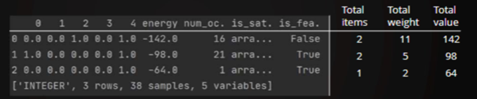

10. Introducción.#
La clase Constrained Quadratic Model nos permite resolver problemas de optimización con un planteamiento fácil y sin necesidad de definir funciones de penalización como ya se ha explicado en procedimientos anteriores. Por este motivo se constituye en un herramienta muy potente y sencilla para ser utilizada dentro del campo de la optimización de recursos.
10.1. Modelo.#
La especificación matemática de esta modelo es la siguiente:
Minimizar la función objetivo:
Sujeto a la restricción:
Donde \(\{x_i\}_{i=1,...N}\) puede ser binario, enteros o continuas (en este momento variables reales no esstán soportadas para interacciones cuadráticas). \(a_i, b_{i,j},c\) son valores reales, \(\odot\,\in \{\ge,\le,= \}\) y M es el número de restricciones.
Los atributos y métodos de esta clase se pueden encontrar en este enlace .
10.2. Características más relevantes de CQM.#
El solver CQM es otro solver híbrido disponible en Leap. Como se muestra en el diagrama, es el mejor solucionador híbrido para problemas con restricciones. Curiosamente, también lo hace bastante bien en QUBOs.
Soporta problemas binarios y de valores enteros, así como modelos que tienen una combinación de tipos de variables. Por ejemplo, la optimización de carteras utiliza variables enteras y la programación de tiendas de trabajo puede utilizar ambas: binarias para seleccionar las máquinas y enteras para determinar en qué intervalo de tiempo deben coincidir la máquina y los trabajos.
El objeto CQM de Ocean nos permite formular y añadir restricciones al modelo de forma más intuitiva, especialmente con la introducción de la matemática simbólica en Ocean 4.
Soporta de forma nativa hasta 100.000 restricciones de igualdad y/o desigualdad, con términos lineales y cuadráticos.
Además soporta el denominado symbolic math para expresar de una forma muy intuitiva para el ser humano las expresiones para la función objetivo o para las restricciones que se quieren incorpoprar al modelo.
De forma abreviada, los pasos a seguir para constrior este tipo de modelos son los siguientes:
1.- Definir las variables.
2.- Crear un objeto de tipo CQM
3.- Construir y añadir la/las función/es objetivo.
4.- Construir y añadir las restricciones.
5.- Enviar lo programado al solucionador CQM.
6.- Procesar los resultados.
10.3. Instanciar in objeto CQM.#
CQM es un objeto de la librería dimod, y se instancia de la siguiente manera:
from dimod import CQM
cqm = CQM()
Sin embargo CQM sampler está en dwave.system:
from dwave.system import LeapHybridCQMSampler
sampler = LeapHybridCQMSampler()
10.4. CQM Variables.#
Cuando se trabaja con CQM se necesita definir explícitamente las variables con las que se va a trabajar. A continuación vamosa a ver algún ejemplo de construcción de estas variables.
Comenzamos definiendo variables de tipo binario (toma valores 0 ó 1) o de tipo Spin (toma valores 1 ó -1)
from dimod import Binary, Spin
x = Binary('x')
print(x)
BinaryQuadraticModel({'x': 1.0}, {}, 0.0, 'BINARY')
s = Spin('s')
print(s)
BinaryQuadraticModel({'s': 1.0}, {}, 0.0, 'SPIN')
Como vemos en los ejemplos anteriores, en estos casos podemos trabajar en el espacio binari o de Spin y dimod nos ofrece las herramientas correspondientes para usar constructores para ser utilizados para crear variables binarias o de Spin. Estos constructores de los ejemplos anteriores crean un BQM con una sola variables que tiene un sesgo lineal igual a 1.
Fijarse en que la cadena entre paréntesis se convierte en la etiqueta de la variable en el BQM que se genera.
Cuando se crean estas variables de tipo entero, sin especificar singún otro parámetro al constructor, entonces los valores que pueden tomar están en el intervalo \([-2^53, 2^53]\), sin embargo un ejercicio de buenas prácticas al definir estas variables consiste en definir en la construcción de las mismas un valor máximo y/o un valor mínimo. A continuación se muestra un ejemplo que nos muestra cómo poder conseguir esto:
from dimod import Integer
# mala práctica
i = Integer("i")
# Buena práctica
i = Integer("i", lower_bound=0, upper_bound=100)
print(i)
QuadraticModel({'i': 1.0}, {}, 0.0, {'i': 'INTEGER'}, dtype='float64')
Al meter estos límites a las variables enteras se reduce el espacio de soluciones lo cual es muy útil para el solucionador del problema.
Como hemos podido comprobar, una variables entera para Ocean es un modelo cuadrático que contiene una variables con un sesgo lineal igual a 1.
Lógicamente en los problemas de gran envergadura, definir una a una las variables de la forma descrita anteriormente, supone un esfuerzo enorme e incluso en algunos casos inabordable, si el número de variables a tener en cuanta es cuantioso. Para estas situaciones, Python nos ofrece mecanismos muy interesantes y que ahorran gran cantidad de trabajo. A continuación se muestran dos ejemplos ilustrtivos de cómo usar estos procedimientos.
# utilizamos la facilidad list comprehension de python
N=100
var_binarias = [Binary(f'bin_{i}') for i in range(N)]
Otra forma puede ser la siguiente (observar que utilizamos en este caso el constructor Integers ):
from dimod import Integers
# Con esta forma incluimos más de una variables en una sola declaración
v,w,x,y,z = Integers(['v','w','x','y','z'])
Estas dos formas últimas, son las sugeridas para ser utilizadas cuando se esté familiarizado con este modelo.
Existen dos formas de añadir variables a un modelo CQM. La primera es definiendo las variables como hemos visto anteriormente y luego y añadirlas al CQM a través de un objetivo o una restricción. A continuación se muestra un ejemplo de esta situación.
from dimod import ConstrainedQuadraticModel, Binary
#Definimos las variables bianrias
x1 = Binary("x1")
# Creamos una instancia de CQM
cqm = ConstrainedQuadraticModel()
# añadimos una variables a través de un objetivo o restricción
cqm.set_objective(x1)
cqm.objective
ObjectiveView({'x1': 1.0}, {}, 0.0, {'x1': 'BINARY'})
El resultado del fragmento de código anterior es un objeto CQM que tiene un objetivo con una única variable x1.
La segunda forma de añadir variables a un objeto CQM es a través de la función add_variable. Esto añade una variable que tiene un sesgo lineal de 0 al objetivo del CQM.
#cqm = ConstrainedQuadraticModel()
cqm.add_variable('BINARY', 'b')
cqm.objective
ObjectiveView({'x1': 1.0}, {}, 0.0, {'x1': 'BINARY'})
El primer método tiende a ser más fácil de usar ya que nos permite construir objetivos y restricciones usando matemáticas simbólicas.
Sin embargo, el segundo método es más eficaz. Por lo tanto, a medida que se escalan los problemas de CQM esto permitirá una construcción más rápida del CQM.
10.5. Funciones objetivo de un CQM.#
Las funciones objetivo de los modelos CQM se almacenan como modelos cuadráticos. Los QM aceptan variables binarias y enteras, admiten términos lineales y cuadráticos y son similares al modelo cuadrático binario en cuanto a su funcionalidad.
Existen dos formas de añadir funiones objetivo a los modelos CQM. Para mostrar estas dos formas, supongamos que nuestra función objetivo es la siguiente:
Las variables \(x_i\) las vamos a designar mediante weights y las otras por x. Por lo tanto lo que queremos es minimizar la suma de variables ponderadas.
Entonces la primera opción es utilizar la denominada symbolic math . De esta manera, Si x es una lista de variables binarias, pesos es una lista de pesos enteros y n es el número de variables binarias podemos definir y establecer la función objetivo en una línea.
# Creamos una instancia de CQM
cqm = ConstrainedQuadraticModel()
#cqm.set_objetive(quicksum(weights[i]*x[i] for i in range(n)))
La función quicksum es una versión optimizada de la función suma de python. Podemos utilizarla para construir funciones objetivo y restricciones.Podemos usarla para construir el objetivo lineal mostrado.
La segunda opción es mucho más elaborada que la anterior, y lo que hace es construir un modelo cuadrático, añade las variables en la función objetivo y luego los pesos lineales.
Una vez que tenemos un modelo cuadrático podemos añadirlo al CQM con set_objective().
Esta última opción, aunque cuesta más su creación, es más óptima que la primera, en el sentido de que es más rápida que usar matemática simbólica.
Es una buena opción cuando se trabaja con modelos grandes, sin embargo para inciare en esto, recomendamos la primera opción ya que es más intuitiva o más cercana a la expresión matemática que se está añadiendo.
#qm= dimod.QuadraticModel()
#qm.add_variables_from('BINARY', range(len(weights)))
#qm.add_linear_from((i,j) for i,j in zip(qm.variables,weights))
#cqm.set_objetive(qm)
A continuación vamos a poner en marcha los dos métodos que se han presentado anteriormente. En primer lugar vamos a crear el modelo utilizando matemática simbólica
from dimod import CQM, Binary, quicksum
weights = [1,2,3]
n = len(weights)
#creamos las variables de tipo Binary
x = [Binary(i) for i in range(n)]
# creamos el objeto CQM y añadimos la función objetivo
cqm = CQM()
cqm.set_objective(quicksum(weights[i]*x[i] for i in range(n)))
cqm.objective
ObjectiveView({0: 1.0, 1: 2.0, 2: 3.0}, {}, 0.0, {0: 'BINARY', 1: 'BINARY', 2: 'BINARY'})
A continuación mostramos cómo construir el mismo modelo anterior, pero utilizando el segundo método que hemos comentado anteriormente, es decir utilizando la clase QuadraticModel().
from dimod import QM
weights = [1,2,3]
n = len(weights)
# creamos un modelo cuadrático
qm = QM()
#Añadimos las variables al modelo cuadrático
qm.add_variables_from('BINARY', range(n))
qm.add_linear_from((i,j) for i,j in zip(qm.variables, weights))
# ahora ya creamos el CQM y la función objetivo
cqm=CQM()
cqm.set_objective(qm)
cqm.objective
ObjectiveView({0: 1.0, 1: 2.0, 2: 3.0}, {}, 0.0, {0: 'BINARY', 1: 'BINARY', 2: 'BINARY'})
La salida de ambas opciones es la misma. Sólo que toman una cantidad de tiempo diferente para construir el CQM.
10.5.1. Objetivos cuadráticos#
Hasta ahora los ejemplos que hemos visto sólo muestran objetivos lineales.El solucionador CQM también admite objetivos cuadráticos.
Algunas aplicaciones comunes que utilizan objetivos cuadráticos son el problema cuadrático de la mochila cuadrática, la partición de grafos y la búsqueda conformacional.
10.6. Restricciones de un modelo CQM#
Uno de los puntos fuertes de un modelo CQM es que le podemos añadir hasta un total de 100000 restricciones, las cuales se almacenan como un diccionario.
Las restricciones se almacenan como un diccionario de modelos cuadráticos binarios (BQM, si hay sólo variables binarias) y de modelos cuadráticos binarios y cuadráticos (QM), dependiendo del tipo de variables que haya en las restricciones del problema.
Las restricciones que sólo utilizan variables binarias se almacenan como BQM y las restricciones con variables enteras o mixtas se almacenan como QM.
Veamos a continuación un ejemplo de modelo CQM con ¿¿¿¿¿¿dos restricciones?????? (MIRAR ESTO EN EL ORIGINAL. La primera restricción la vamos a llamar “choose 2” porque de una serie de variables binarias, nos queremos quedar sólo con dos. La restricción que ponemos es la siguiente:
Entonces como ya hemos comentado anteriormente, también para las restricciones tenemos dos opciones:
1.- Usando matemática simbólica:
cqm,add_constraint(quicksum(x[i] for i in range(n)) ==2, label=’choose 2’)
2.- Construir un modelo quadrático y añadirlo al modelo CQM
qm.add_variables_from(‘BINARY’, range(n))
qm.add_linear_from((i,1) for i in qm.variables)
cqm.add_constraint(qm, rhs=2, sense=’==’, label=’choose 2’)
Así pues lo que aquí planteamos es una restricción de igualdad en la que se quieren elegir dos variables binarias.
En este , x representa una lista de variables binarias. Usando la matemática simbólica podemos emplear la misma técnica que hicimos con el objetivo.
Podemos utilizar la función quicksum para sumar las variables binarias en x y utilizar el operador de igualdad para definir la restricción de igualdad.
También es útil incluir una etiqueta para poder diferenciar las restricciones en el modelo.
Con la segunda opción, tenemos que crear un modelo cuadrático, añadir las variables binarias, y luego establecer los pesos lineales, incluso cuando los pesos son uno.
Al añadir un QM como una restricción con la función add_constraint, tenemos que especificar parámetros de entrada adicionales.
El modelo cuadrático que construimos sólo contiene el lado izquierdo de la ecuación que se muestra. Añadimos este lado izquierdo de la restricción con la propiedad add_linear_from y añadimos como primer parámetro el par (i,1), indicando que tomamos la variable i-ésima, la cual está multiplicado por 1 (que en general será otro valor \(w_i\))
En add_constraint, tenemos que especificar el lado derecho de la ecuación que es el 2 en este caso. Para ello utilizamos el parámetro “sense” es el que utilizamos para definir el tipo de restricción. En este caso estamos añadiendo una restricción de igualdad como puedes ver. Además añadimos el parámetro rhs para indicar que es el lado derecho de la ecuación.
Para ver el significado de estos términos con mayor claridad, se invita al lector para que visite este enlace y acuda al apartado “Representing Constraints” donde podrá ver un mayor detalle de todo esto.
Los fragmenmtos de código que se utilizarían para implementar todo esto serían los siguientes:
# primer caso
from dimod import CQM, QM, Binary, quicksum
# symbolic math
n=3
#Creamos las variables binarias
x = [Binary(i) for i in range(n)]
# Creamos el CQM y la restricción
cqm = CQM()
cqm.add_constraint(quicksum(x[i] for i in range(n))==2, label='choose 2')
cqm.constraints
<dimod.constrained.cyconstrained.ConstraintsView at 0x19145b78f80>
Observar que cuando construimos la restricción de esta manera, se añade al CQM como un modelo cuadrático binario.
Creamos ahora el código para implementar el segundo método
from dimod import CQM, QM, Binary
n=3
#Creamos el modelo cuadrático
qm=QM()
# Añadimos variables al modelo cuadrático
qm.add_variables_from('BINARY', range(n))
qm.add_linear_from((i,1) for i in qm.variables)
#creamos el CQM y le añadimos las restricciones
cqm = CQM()
cqm.add_constraint(qm, rhs=2, sense='==', label='choose 2')
cqm.constraints
<dimod.constrained.cyconstrained.ConstraintsView at 0x19145b915c0>
Cabe destacar que todas las restricciones que se añaden a un CQM con la función función add_constraint se evalúan como restricciones duras, por lo que el CQM ajusta el parámetro de Lagrange para que todas las restricciones se satisfagan idealmente.
Si tiene restricciones blandas que quiere tener en cuenta en su modelo, puede construir un modelo de penalización, como se ha visto en módulos anteriores del curso, y añadirlo al objetivo.
En ese caso, es posible que tenga que ponderar manualmente la restricción en relación con las funciones objetivo.
El solucionador CQM también soporta restricciones cuadráticas.
El ejemplo que vimos sólo mostraba una restricción lineal, pero las restricciones cuadráticas tambiénse pueden añadir fácilmente.
Algunas aplicaciones que utilizan restricciones cuadráticas son la programación de empleados, la optimización de carteras y la selección de ensayos clínicos.
10.7. CQM sampler.#
El último paso en la construcción de un programa CQM es definir el sampler y enviarle el CQM a él. Esto se consigue con las siguientes instrucciones:
from dwave.system import LeapHybridCQMSampler
cqm_sampler = LeapHybridCQMSampler()
sampleset = cqm_sampler.sample_cqm(cqm, time_limit=5, label=’CQM problem’)
El solver CQM se accede a través del LeapHybridCQMSampler en el paquete dwave.system y la función sample_cqm es la que utilizamos para enviar un CQM al muestreador.
Al igual que los otros solucionadores híbridos, el único parámetro ajustable disponible es el límite de tiempo.Por defecto, el límite de tiempo es de 5 segundos para problemas pequeños. Este valor por defecto se ajusta con el tamaño del problema.
10.8. Ejemplo 1. Problema de la mochila. (Knapsack)#
En este ejemplo vamos a tratar el problema de la mochila. En este problema queremos seleccionar los artículos que vamos a meter en una mochila, camión u otro contenedor de manera que maximicemos el valor total de los artículos seleccionados.
Otra restricción también que debemos tener en cuenta es que el camión o contenedor tiene una capacidad máxima que no debemos sobrepasar.
Entonces para modelar este problema, vamos a utilizar variables binarias \(x_i\), tantas como artículos tenemos, de manera que esa variable vale 1 si el artículo i-ésimo es elegido y cero en caso contrario. Entonces la función objetivo va a ser la siguiente:
Donde \(v_i\) es el valor del objeto i-ésimo. Ponemos el signo menos porque lo que realmente queremos es maximizar el valor, pero los ordenadores de D-Wave siempre minimizan una función, por lo que si cambiamos de signo al final el valor mínimo, se convierte en máximo.
Este problema también tiene una restricción de desigualdad. El peso total de todos los artículos elegidos no puede exceder la capacidad máxima de peso de la mochila.
Lo expresamos con la expresión de desigualdad que se muestra aquí, donde la minúscula w en la suma representa el peso de cada elemento y la mayúscula W es el peso máximo de la mochila.
Para este ejemplo, vamos a añadir una segunda restricción. Un máximo de 2 artículos pueden caber en la mochila.Es decir:
Todo esto traducido en código Python, sería lo siguiente:
from dimod import Binary, CQM, quicksum
from dwave.system import LeapHybridCQMSampler
import itertools
values = [34,25,78,21,64]
weights = [3,5,9,4,2]
W = 10 #peso máximo admitido por el camión o mochila
n = len(values)
# creamos las variables binarias
x = [Binary(i) for i in range(n)]
# Construimos el objeto CQM
cqm = CQM()
# Añadimos la función objetivo
cqm.set_objective(quicksum(-values[i]*x[i] for i in range(n)))
#Añadimos las dos restricciones
cqm.add_constraint(quicksum(weights[i]*x[i] for i in range(n)) <= W, label='max peso')
cqm.add_constraint(quicksum(x[i] for i in range(n)) <= 2, label='max items')
# submitimos el problema
sampler = LeapHybridCQMSampler()
sampleset = sampler.sample_cqm(cqm)
Para este ejemplo, vamos a ver un problema realmente pequeño que sólo tiene 5 elementos.
El valor y el peso de cada elemento se define en las listas de valores y pesos.
El peso máximo de la mochila se establece en 10.
Empezamos creando 5 variables binarias, una para cada elemento. A continuación, creamos el CQM y establecemos el objetivo de maximizar el valor de los elementos seleccionados.
Obsérvese el signo negativo delante de la multiplicación de los valores por las variables binarias. De nuevo, esto hace que el objetivo de maximización sea compatible con el solucionador CQM que naturalmente minimiza.
A continuación añadimos las dos restricciones de desigualdad.
En primer lugar, sumamos el peso de cada elemento por la variable binaria asociada con el artículo y establecemos la suma como menor o igual al peso máximo de la mochila.Llamamos a esta restricción “max peso”.
Luego añadimos la restricción que limita el número de elementos elegidos a un máximo de 2.Esta restricción se denomina “max items”.Por último, instanciamos el muestreador CQM y le enviamos el sampler CQM.
El formato del resultado que obtenemos es el que se muestra en la siguiente figura
El sampler CQM devuelve un conjunto de muestras y como se desprende de la observación de la figura anterior, hay algunas diferencias entre este conjunto de muestras y los devueltos por los otros solvers.
La primera es que la energía sólo se calcula a partir de la función objetivo, por lo que las restricciones no afectan a la energía.
La segunda diferencia es que tenemos dos columnas adicionales en el conjunto de muestras devuelto por el solucionador CQM (Constraint satisfaction array y soluction feasibility).
La columna is_satisfied contiene una matriz para cada muestra. La matriz contiene el estado de cada restricción en la muestra. En otras palabras, nos dice si cada restricción fue satisfecha o no.
La columna is_feasible nos dice si la muestra es factible. Una muestra sólo es factible si se cumplen todas las restricciones.
Se observa que el solucionador CQM devuelve soluciones factibles, así como soluciones no factibles. Informamos de la satisfacción de las restricciones individuales para que pueda examinar las soluciones no factibles de baja energía.
Dependiendo de la aplicación, puede haber casos en los que una solución de baja energía de energía vale la pena considerar, dependiendo de cuántas y cuáles restricciones son violadas.

Si observamos cada muestra del conjunto de muestras, podemos ver que todas las muestras devuelven soluciones que seleccionan 1 o 2 elementos, por lo que la restricción de “máximo de elementos” se cumple en todas.
Recordemos que la capacidad máxima de peso de la mochila es de 10.
En este ejemplo, las mejores soluciones que satisfacen ambas restricciones (las dos últimas muestras del conjunto de muestras) tienen un valor total relativamente bajo. Sus valores son 98 y 64, como se muestra a la derecha. Entonces, si podemos violar la restricción de capacidad máxima sólo un poco, podemos aumentar el valor total a 142.
En algunos casos podemos tener esa flexibilidad y puede valer la pena violar la para aumentar el valor total proporcionado por el objetivo.
Las programación de Ocean, nos permite entresacar información de las soluciones obtenidas, y así por ejemplo, podem os chequear las soluciones no factibles, con el código siguiente:
muestra_nofactible = sampleset.filter(lambda d: not d.is_feasible).first
Por el contrario, si queremos la solución factible de menor enegía, entonces lo haríamos con el siguiente código:
muestra_factible = sampleset.filter(lambda d: d.is_feasible).first
10.9. Ampliar conocimientos.#
Para el lector que quiera ampliar conocimientos sobre esta clase, puede consultar más aspectos de este solver en este enlace.